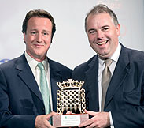

 SOUTH NORFOLK MP Richard Bacon has written to Prime Minister David Cameron, asking him to use his good offices to ensure a sensible outcome in contract renegotiations between computer firm CSC and the NHS under the controversial National Programme for IT in the NHS.
You can read Mr Bacon's letters to Ms Christine Connelly, Chief Information Officer at the Department of Health of 23 March 2011 and 2 March 2011 below.
5 April 2011
Rt Hon David Cameron MP
Prime Minister
10 Downing Street
London SW1A 0AA
5 April 2011
Dear Prime Minister
CABINET OFFICE INVOLVEMENT IN DISPUTES WITH NHS IT SUPPLIERS
I am writing to you about current negotiations with CSC under the National Programme for IT in the NHS, because I believe you should insist that Connecting for Health accepts the need for full and unhampered Cabinet Office involvement in the renegotiation process.
The NPfIT contracts with service providers are fundamentally broken. There really is no good public policy justification for continuing them, since the Local Service Providers (LSPs) have manifestly failed to deliver what was expected of them. However, the terms of the contracts seem to raise a significant threat of legal action if the government were now to withdraw from them unilaterally. The government is now exploring how it might minimise that risk, or at least maximise the chances of winning any legal action that is taken.
The Efficiency & Reform Group in the Cabinet Office have rightly taken the view that – as with other government IT suppliers – the National Programme LSP contracts should be set within the wider sphere of government computing and the overall relationship which suppliers are seeking to have with the Crown. It should give the LSPs pause for thought if any legal action they might take could put them in dispute with the entire UK public sector and not simply the NHS. Any IT supplier with significant government contracts or ambitions to enter into them in future would have to take that into serious account. In this context, it is worth stating that Fujitsu is taking a very constructive approach to its overall relationship with government.
However, I remain very concerned about CSC and I fear that the approach adopted by the Chief Information Officer for Health may not be helping the situation. Connecting for Health seems to remain committed to the delivery of systems through Local Service Providers such as CSC that have been shown to be unreliable, subject to serious delays and, even after contract renegotiations, unreasonably expensive. Furthermore, CSC’s offer to extend its contract and then to offer a choice of software instead will not help; even with the proposed reduction from 220 to 80 Trusts, this would cause serious problems, which I would summarise as follows:
I am also convinced that once central milestone payments are taken into account, CSC (and also BT) are charging the NHS a great deal more for each system than would be charged by normal (i.e. non-Local Service Provider) suppliers. Constant amendments to LSP contracts to give the suppliers more time, more options, and more product opportunities simply mean that the NHS is landing itself with more serious and avoidable problems. It should be remembered that over the last seven years the NHS has accepted old systems that predate the National Programme – supposedly as a short term interim solution when the timetable for the Lorenzo system first slipped – and it has tolerated delay after delay as deadlines were missed. The NHS has spent tens or even hundreds of millions of pounds of its own money on Lorenzo, trying to install the frankly uninstallable.
I therefore believe that any settlement with existing Local Service Providers must be separated decisively from any consideration of future NHS business. In other words, CSC (and in my opinion also BT) must be made to compete in an open market as best they can.
I believe the time is right for you to use your good offices to ensure a sensible outcome to the contract renegotiation with CSC.
I am copying this email to Francis Maude.
Yours ever
Richard
p.s. Below is my email of 2nd March 2011 to the Chief information Officer for Health, to which I have not received a reply.
RICHARD BACON
MP for South Norfolk
Member, Public Accounts Committee
House of Commons
LONDON SW1A 0AA
Ms Christine Connelly
Chief Information Officer for Health
Department of Health
Richmond House
London SW1A 2NS
23rd March 2011
Dear Ms Connelly
MY EMAIL OF 2nd MARCH 2011 ABOUT CONTRACT NEGOTIATION IN THE NATIONAL PROGRAMME FOR IT IN THE NHS
I am writing to you about my email of 2nd March 2011 (which I enclose below), to which I have not yet received a reply. I do understand from your office that you were away on holiday until 14th March but now that you are back I would be very grateful if you could respond soon.
With many thanks
Yours sincerely
Richard Bacon
MP for South Norfolk
Member of the Public Accounts Committee
Ms Christine Connelly
Chief Information Officer for Health
Department of Health
Richmond House
London SW1A 2NS
2nd March 2011
Dear Ms Connelly
CONTRACT NEGOTIATION IN THE NATIONAL PROGRAMME FOR IT IN THE NHS
Thank you very much for your letter of 24th January 2011.
In my original letter to you of 13th January 2011, I asked you specifically whether the contract renegotiations with BT and Cerner represented best value for taxpayers’ money. Although I am grateful for your detailed reply, I do not see any direct answer to that question, which seems to me absolutely fundamental.
Unless the question can be answered clearly in the affirmative, I can see no justification for concluding further agreements with these companies, at least until after the NAO has reported and the Public Accounts Committee has had time to consider its findings. I am disappointed that you have not given such a commitment and I would ask you again to consider doing so.
I would also like to address some of the specific points in your letter.
My point about the Cerner product in London was that originally planned deployments of GP systems, a London Ambulance solution and a number of systems in acute trusts were included in the original contract price of £1.2 billion and are not now being delivered. I note that you do not comment on my observation that only about half the original contract will be delivered, but that payments have been reduced by only £112 million. I cannot see how this can be value for money to taxpayers and I note that you do not claim that it is.
You say that I am “misinformed” about the level of Cerner functionality, which you say “has not been reduced”. I must refer you to page 23 of the June 2006 NAO report in which it is stated that Cerner Millennium was being supplied in four releases, covering the same functionality as the original five IDX releases. This included a Patient Administration System, a GP system, a web based referrer, a pharmacy system, and systems for acute departments, emergency care and mental health, all to be delivered as an integrated Cerner solution. Much of this has now been dropped, or replaced with cheaper departmental systems such as RiO, but I cannot see that taxpayers have seen an appropriate consequent saving.
You acknowledge that the history of delivery of Lorenzo is “very unsatisfactory”, a point on which we can certainly agree. My additional point is that there is no good reason to think that the long record of unmet promises, missed deadlines and in some cases outright misrepresentation is about to change. Therefore, I can see no good reason for the Department to persist with supporting the deployment of the Lorenzo system through the contract with CSC. I note that the Chief Executive of the NHS and the President of CSC were scheduled to meet to discuss this matter and I sincerely hope that this does not simply result in further unreliable promises and consequent failures.
In relation to the price of the RiO product, I would observe that the systems supplied directly by CSE Servelec seem to be functioning in practice as well as the LSP version, so I cannot see how there is a good reason for the price of the LSP versions to be around ten times as high. As you say, this is likely to be considered by the NAO. In the interim, I should be happy to supply a list of non-NPfIT RiO users if that would assist you in making the comparison. My concern about value for money to taxpayers is of course not related to whether the decision was made entirely by your Department or with some involvement by the Treasury.
Since my letter to you there have been further reports that raise doubts over the effectiveness of LSP systems, including:
These reports simply add to my concern that you seem to remain committed to the delivery of systems through LSPs that have been shown to be unreliable, subject to serious delays and, even after contract renegotiations, unreasonably expensive. Quite apart from the burden this places on taxpayers at a time of exception stringency in public spending, it is also surely not in the interests of the NHS and its patients.
I do sincerely hope that you will now feel able to give a commitment not to enter into revised contracts until the NAO has reported and the PAC has considered the matter.
Yours sincerely
Richard Bacon
MP for South Norfolk
Member of the Public Accounts Committee
|
|
|